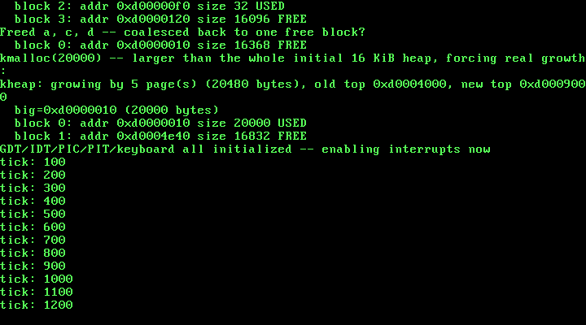

9. A Kernel Heap: Real Dynamic Memory with kmalloc/kfree¶
What you will understand: why fixed 4 KiB frames and one-off page mappings are not enough for real kernel data structures, the free-list allocator technique the OSDev Wiki itself describes (hidden headers, a sorted list of free zones, splitting and coalescing), and how to build a working kmalloc/kfree entirely out of this book's own existing machinery -- Chapter 7's physical frames and Chapter 8's page mapping -- rather than a new, separate memory source.
What you need to know first: Chapter 7's pmm_alloc_frame() (every byte this chapter's heap ever manages traces back to a frame from there) and Chapter 8's paging_map_page() (every one of those frames reaches the heap's own virtual address range through it). This chapter stays in Part 5, since a dynamic allocator is still fundamentally about managing this machine's real memory -- the third and, for now, final layer above the physical frames Chapter 7 first exposed.
Why frames and one-off mappings are not enough¶
Chapter 7 hands out memory in fixed 4 KiB pieces. Chapter 8 maps individual virtual addresses to individual physical frames, one call at a time. Neither gives this kernel anything close to what a real struct -- 40 bytes, 200 bytes, whatever a later chapter's own data actually needs -- requires: memory in the size the caller actually asked for, tracked well enough to be given back safely later. That gap is exactly what a heap allocator closes, and this chapter builds one for real rather than reaching for a pre-existing implementation.
The free-list technique, cited from source¶
The OSDev Wiki's own memory allocation page describes the core idea plainly:
"put at the start of the freed zone a descriptor that allows you to insert it in a list of free zones"
with that descriptor holding a nextfreeptr, a prevfreeptr, and a zone size, and:
"Keeping that list sorted by address helps you identifying contiguous free zones and allows you to merge them in larger free zones"
(OSDev Wiki, "Memory Allocation": https://wiki.osdev.org/Memory_Allocation)
And on where that descriptor actually lives relative to the memory a caller gets back:
"It's way easier to keep the size of allocated objects in a header hidden from the requester, so that a call to free doesn't require the object's size. Normally this hidden header is kept just before the block returned by malloc"
(same page)
The Wiki's own "Writing a memory manager" tutorial names the three real operations this chapter implements, without prescribing exact code -- "Plan it how you would like," it says, and "Don't copy someone else's code!" -- but describing the shape each one takes:
"If the space found is significantly larger than the space needed, then it is generally a good idea to split it up... add another header right after the used space and update the pointers."
"scan through the memory and merge free blocks (e.g. if next pointer's header is free... set the current block's next pointer to that used block, skipping over the free blocks)"
(OSDev Wiki, "Writing a memory manager": https://wiki.osdev.org/Writing_a_memory_manager)
This chapter's own list stays sorted by address without a separate sort step, for a structural reason worth stating plainly: it starts as one block, kmalloc's own splits only ever insert a new block immediately after the one it came from, and growing the heap only ever appends past the current tail -- every insertion already lands in the right place.
009_kheap.h/009_kheap.c: a real allocator, built from what this book already has¶
#ifndef UNIX_OS_009_KHEAP_H
#define UNIX_OS_009_KHEAP_H
#include <stdint.h>
/* Sets up this kernel's first dynamic memory allocator: maps an
* initial run of virtual pages at KHEAP_START (via this chapter's own
* paging_map_page(), backed by frames from Chapter 7's
* pmm_alloc_frame()) and installs one large free block covering all
* of it. */
void kheap_init(void);
/* Returns a pointer to at least `size` usable bytes, or 0 if the heap
* could not be grown far enough to satisfy the request. */
void *kmalloc(uint32_t size);
/* Returns a block previously handed out by kmalloc() to the free
* list, coalescing it with any free neighbor blocks. */
void kfree(void *ptr);
/* Prints every block currently on the heap's list -- address, size,
* and free/used state -- in address order. Exists purely for this
* chapter's own real, live verification: splitting, coalescing, and
* growth are all things this function lets a real run show happening,
* rather than merely claiming to. */
void kheap_dump(void);
#endif
#include <stdint.h>
#include "009_kheap.h"
#include "009_paging.h"
#include "009_pmm.h"
#include "009_printf.h"
/* A real free-list heap allocator, in the same spirit the OSDev Wiki
* describes: "put at the start of the freed zone a descriptor that
* allows you to insert it in a list of free zones" -- next/prev
* pointers and a size, kept sorted by address so neighbors can be
* recognized and merged -- and "it's way easier to keep the size of
* allocated objects in a header hidden from the requester, so that a
* call to free doesn't require the object's size... kept just before
* the block returned."
* (OSDev Wiki, "Memory Allocation": https://wiki.osdev.org/Memory_Allocation)
*
* This chapter's own list stays sorted by construction: kheap_init()
* starts with one block, kmalloc()'s splits only ever insert a new
* block immediately after the one it came from, and kheap_expand()
* only ever appends past the current tail -- so every insertion
* already lands in address order, without a separate sort step. */
#define KHEAP_START 0xD0000000u
#define KHEAP_INITIAL_PAGES 4u
#define KHEAP_MIN_SPLIT 16u
#define PAGE_SIZE_BYTES 4096u
typedef struct kheap_block {
uint32_t size; /* usable bytes in this block, not counting this header */
uint32_t free; /* 1 = free, 0 = handed out by kmalloc */
struct kheap_block *next;
struct kheap_block *prev;
} kheap_block_t;
static kheap_block_t *kheap_head = 0;
static kheap_block_t *kheap_tail = 0;
static uint32_t kheap_end = 0; /* first not-yet-mapped virtual address past the heap */
static uint32_t align_up8(uint32_t n) {
return (n + 7u) & ~7u;
}
/* Maps `pages` fresh frames at the heap's current top, growing
* kheap_end -- every one of these frames comes from Chapter 7's own
* physical memory manager, and every mapping goes through this
* chapter's own paging_map_page(), the same real functions the rest
* of this kernel already depends on. */
static void kheap_map_pages(uint32_t pages) {
for (uint32_t i = 0; i < pages; i++) {
uint32_t frame = pmm_alloc_frame();
paging_map_page(kheap_end, frame, PAGE_PRESENT | PAGE_RW);
kheap_end += PAGE_SIZE_BYTES;
}
}
void kheap_init(void) {
kheap_end = KHEAP_START;
kheap_map_pages(KHEAP_INITIAL_PAGES);
kheap_head = (kheap_block_t *) KHEAP_START;
kheap_head->size = (KHEAP_INITIAL_PAGES * PAGE_SIZE_BYTES) - sizeof(kheap_block_t);
kheap_head->free = 1;
kheap_head->next = 0;
kheap_head->prev = 0;
kheap_tail = kheap_head;
kprintf("kheap: initialized at 0x%x, %u bytes usable (%u pages mapped)\n",
KHEAP_START, kheap_head->size, KHEAP_INITIAL_PAGES);
}
/* Grows the heap by enough whole pages to satisfy `min_size`, then
* either extends the current tail block (if it is already free) or
* appends a brand new free block covering the newly mapped pages --
* the OSDev Wiki's own "if it's free" case for keeping the list
* merged rather than fragmented, applied at grow time instead of only
* at free time. */
static void kheap_expand(uint32_t min_size) {
uint32_t needed = min_size + (uint32_t) sizeof(kheap_block_t);
uint32_t pages = (needed + PAGE_SIZE_BYTES - 1u) / PAGE_SIZE_BYTES;
if (pages == 0) {
pages = 1;
}
uint32_t old_end = kheap_end;
kheap_map_pages(pages);
uint32_t grown_bytes = pages * PAGE_SIZE_BYTES;
kprintf("kheap: growing by %u page(s) (%u bytes), old top 0x%x, new top 0x%x\n",
pages, grown_bytes, old_end, kheap_end);
if (kheap_tail != 0 && kheap_tail->free) {
kheap_tail->size += grown_bytes;
return;
}
kheap_block_t *new_block = (kheap_block_t *) old_end;
new_block->size = grown_bytes - (uint32_t) sizeof(kheap_block_t);
new_block->free = 1;
new_block->next = 0;
new_block->prev = kheap_tail;
if (kheap_tail != 0) {
kheap_tail->next = new_block;
} else {
kheap_head = new_block;
}
kheap_tail = new_block;
}
void *kmalloc(uint32_t size) {
size = align_up8(size);
for (int attempt = 0; attempt < 2; attempt++) {
kheap_block_t *b = kheap_head;
while (b != 0) {
if (b->free && b->size >= size) {
uint32_t leftover = b->size - size;
if (leftover >= sizeof(kheap_block_t) + KHEAP_MIN_SPLIT) {
/* OSDev Wiki: "If the space found is significantly
* larger than the space needed... add another
* header right after the used space and update
* the pointers." (Writing a memory manager) */
kheap_block_t *new_block =
(kheap_block_t *) ((uint8_t *) (b + 1) + size);
new_block->size = leftover - (uint32_t) sizeof(kheap_block_t);
new_block->free = 1;
new_block->next = b->next;
new_block->prev = b;
if (b->next != 0) {
b->next->prev = new_block;
} else {
kheap_tail = new_block;
}
b->next = new_block;
b->size = size;
}
b->free = 0;
return (void *) (b + 1);
}
b = b->next;
}
/* Nothing free was big enough -- grow the heap for real and
* try exactly once more, rather than looping forever. */
kheap_expand(size);
}
return 0;
}
void kfree(void *ptr) {
if (ptr == 0) {
return;
}
kheap_block_t *b = ((kheap_block_t *) ptr) - 1;
b->free = 1;
/* OSDev Wiki: "if next pointer's header is free... set the
* current block's next pointer to that used block, skipping over
* the free blocks" -- merge forward first. (Writing a memory manager) */
if (b->next != 0 && b->next->free) {
kheap_block_t *n = b->next;
b->size += (uint32_t) sizeof(kheap_block_t) + n->size;
b->next = n->next;
if (n->next != 0) {
n->next->prev = b;
} else {
kheap_tail = b;
}
}
/* Then merge backward into a free previous block, the same way. */
if (b->prev != 0 && b->prev->free) {
kheap_block_t *p = b->prev;
p->size += (uint32_t) sizeof(kheap_block_t) + b->size;
p->next = b->next;
if (b->next != 0) {
b->next->prev = p;
} else {
kheap_tail = p;
}
}
}
void kheap_dump(void) {
kheap_block_t *b = kheap_head;
uint32_t idx = 0;
while (b != 0) {
kprintf(" block %u: addr 0x%x size %u %s\n",
idx, (uint32_t) (uintptr_t) (b + 1), b->size, b->free ? "FREE" : "USED");
b = b->next;
idx++;
}
}
Four real decisions worth slowing down on:
The heap lives at its own virtual address, 0xD0000000, mapped on demand rather than all at once. kheap_init maps only four pages (16 KiB) to start; every later page comes from kheap_expand, called only when kmalloc genuinely cannot satisfy a request from the free list it already has. Nothing about this chapter pre-reserves a large run of physical memory it might never use -- the heap grows exactly when growth is needed, and no sooner.
Every frame comes from pmm_alloc_frame(), every mapping from paging_map_page(). kheap_map_pages is the only place this file touches either one, and it is a thin real bridge between them: ask Chapter 7's allocator for a frame, hand that frame straight to Chapter 8's mapper at the heap's own current top, advance the top by one page. Nothing here reimplements what either chapter already does correctly.
Splitting only happens when the leftover is big enough to be useful. KHEAP_MIN_SPLIT (16 bytes) plus the header's own size (16 bytes) is the real threshold: a leftover smaller than that would produce a free block too small for almost any real allocation to ever use, so kmalloc keeps the extra space attached to the block it already found instead of fragmenting the heap for no benefit.
kfree merges forward before backward, and both merges are real, unconditional structural surgery on the list -- not a flag or a deferred cleanup pass. A freed block immediately absorbs a free next-neighbor's size and unlinks it, then immediately absorbs a free previous-neighbor the same way. Two real allocations that happen to sit next to each other in memory, once both are freed, are provably one block again by the time kfree returns -- not merely eligible to become one later.
009_kmain.c: watching the free list change, not just trusting it did¶
/* Chapter 9: this kernel gets its first dynamic memory allocator.
* Everything built through Chapter 8 -- physical frames, page tables,
* paging itself -- managed memory in fixed 4 KiB units or as one-off
* virtual mappings. Real kernel data structures rarely come in exactly
* 4 KiB pieces, so this chapter builds kmalloc()/kfree() on top of
* everything before it: a free-list heap, backed by fresh physical
* frames from Chapter 7's pmm_alloc_frame() and mapped into virtual
* memory with Chapter 8's own paging_map_page() -- the same two real
* functions the rest of this kernel already depends on, put to work
* for a new purpose rather than reimplemented. */
#include <stdint.h>
#include "009_gdt.h"
#include "009_idt.h"
#include "009_keyboard.h"
#include "009_kheap.h"
#include "009_multiboot.h"
#include "009_paging.h"
#include "009_pic.h"
#include "009_pit.h"
#include "009_pmm.h"
#include "009_printf.h"
#include "009_serial.h"
#include "009_vga.h"
#define TIMER_FREQUENCY_HZ 100
/* Deliberately far outside the 0-64 MiB identity-mapped range (which
* only ever occupies page-directory entries 0-15): 0xC0000000 >> 22 =
* 768. Mapping here forces paging_map_page() to allocate a genuinely
* new page table rather than reusing one paging_init() already built. */
#define TEST_VIRT_ADDR 0xC0000000u
/* Defined by 009_linker.ld, not by this file -- the linker is the one
* part of this toolchain that genuinely knows where the kernel image's
* last real section ends in physical memory. */
extern char kernel_end[];
void kmain(uint32_t magic, uint32_t mboot_info_addr) {
serial_init();
vga_init();
vga_set_color(VGA_COLOR_LIGHT_GREEN, VGA_COLOR_BLACK);
kprintf("Unix OS from Scratch -- Chapter 9: kernel entry reached\n");
if (magic != MULTIBOOT2_BOOTLOADER_MAGIC) {
kprintf("FATAL: EAX held 0x%x at entry, not the real Multiboot2 magic 0x%x -- halting\n",
magic, MULTIBOOT2_BOOTLOADER_MAGIC);
__asm__ volatile ("cli");
for (;;) { __asm__ volatile ("hlt"); }
}
kprintf("Multiboot2 magic confirmed in EAX: 0x%x\n", magic);
const struct multiboot_tag_mmap *mmap = multiboot_find_mmap(mboot_info_addr);
if (mmap == 0) {
kprintf("FATAL: no memory map tag in this boot information structure -- halting\n");
__asm__ volatile ("cli");
for (;;) { __asm__ volatile ("hlt"); }
}
multiboot_print_mmap(mmap);
uint32_t kernel_end_addr = (uint32_t) (uintptr_t) kernel_end;
kprintf("Kernel image occupies physical 0x100000 - 0x%x\n", kernel_end_addr);
pmm_init(mmap, 0x100000, kernel_end_addr);
uint32_t free_frames = pmm_count_free_frames();
kprintf("Physical memory manager ready: %u free frames (%u KiB usable)\n",
free_frames, free_frames * 4);
uint32_t f1 = pmm_alloc_frame();
uint32_t f2 = pmm_alloc_frame();
uint32_t f3 = pmm_alloc_frame();
kprintf("Allocated three real frames: 0x%x, 0x%x, 0x%x\n", f1, f2, f3);
pmm_free_frame(f2);
kprintf("Freed the middle frame 0x%x -- %u free frames now\n", f2, pmm_count_free_frames());
uint32_t f4 = pmm_alloc_frame();
kprintf("Allocated again: got 0x%x (matches the freed frame? %s)\n",
f4, (f4 == f2) ? "yes" : "no");
paging_init();
uint32_t test_frame = pmm_alloc_frame();
paging_map_page(TEST_VIRT_ADDR, test_frame, PAGE_PRESENT | PAGE_RW);
volatile uint32_t *via_virtual = (volatile uint32_t *) TEST_VIRT_ADDR;
volatile uint32_t *via_identity = (volatile uint32_t *) test_frame;
*via_virtual = 0xCAFEF00Du;
kprintf("Wrote 0x%x through virtual address 0x%x\n", *via_virtual, TEST_VIRT_ADDR);
kprintf("Reading the SAME physical frame (0x%x) through its identity-mapped address: 0x%x\n",
test_frame, *via_identity);
kheap_init();
kprintf("kmalloc: three real allocations --\n");
void *a = kmalloc(64);
void *b = kmalloc(128);
void *c = kmalloc(32);
kprintf(" a=0x%x (64 bytes), b=0x%x (128 bytes), c=0x%x (32 bytes)\n",
(uint32_t) (uintptr_t) a, (uint32_t) (uintptr_t) b, (uint32_t) (uintptr_t) c);
kheap_dump();
kfree(b);
kprintf("kfree(b) -- middle block freed:\n");
kheap_dump();
void *d = kmalloc(128);
kprintf("kmalloc(128) again: got 0x%x (matches freed b? %s)\n",
(uint32_t) (uintptr_t) d, (d == b) ? "yes" : "no");
kheap_dump();
kfree(a);
kfree(c);
kfree(d);
kprintf("Freed a, c, d -- coalesced back to one free block?\n");
kheap_dump();
kprintf("kmalloc(20000) -- larger than the whole initial 16 KiB heap, forcing real growth:\n");
void *big = kmalloc(20000);
kprintf(" big=0x%x (20000 bytes)\n", (uint32_t) (uintptr_t) big);
kheap_dump();
kfree(big);
gdt_init();
idt_init();
pic_remap(0x20, 0x28);
pic_disable_all();
keyboard_init();
pit_init(TIMER_FREQUENCY_HZ);
kprintf("GDT/IDT/PIC/PIT/keyboard all initialized -- enabling interrupts now\n");
__asm__ volatile ("sti");
for (;;) {
__asm__ volatile ("hlt");
}
}
kheap_dump() exists specifically so this chapter's own real run does not have to be taken on faith: every real operation below -- three allocations, a free, a reuse, three more frees, and finally an allocation larger than the entire initial heap -- is followed by a live printout of every block's real address, size, and free/used state. Chapter 7 and Chapter 8's own demonstrations run first and unchanged, for the same reason they always have: if anything below them broke, they would be the first real evidence of it.
Building it, for real¶
nasm -f elf32 009_boot.asm -o boot.o
nasm -f elf32 009_gdt_flush.asm -o gdt_flush.o
nasm -f elf32 009_idt_flush.asm -o idt_flush.o
nasm -f elf32 009_isr0.asm -o isr0.o
nasm -f elf32 009_irq0.asm -o irq0.o
nasm -f elf32 009_irq1.asm -o irq1.o
gcc -m32 -ffreestanding -fno-stack-protector -fno-pic -Wall -Wextra -c 009_vga.c -o vga.o
gcc -m32 -ffreestanding -fno-stack-protector -fno-pic -Wall -Wextra -c 009_serial.c -o serial.o
gcc -m32 -ffreestanding -fno-stack-protector -fno-pic -Wall -Wextra -c 009_gdt.c -o gdt.o
gcc -m32 -ffreestanding -fno-stack-protector -fno-pic -Wall -Wextra -c 009_idt.c -o idt.o
gcc -m32 -ffreestanding -fno-stack-protector -fno-pic -Wall -Wextra -c 009_pic.c -o pic.o
gcc -m32 -ffreestanding -fno-stack-protector -fno-pic -Wall -Wextra -c 009_pit.c -o pit.o
gcc -m32 -ffreestanding -fno-stack-protector -fno-pic -Wall -Wextra -c 009_printf.c -o printf.o
gcc -m32 -ffreestanding -fno-stack-protector -fno-pic -Wall -Wextra -c 009_isr_handlers.c -o isr_handlers.o
gcc -m32 -ffreestanding -fno-stack-protector -fno-pic -Wall -Wextra -c 009_keyboard.c -o keyboard.o
gcc -m32 -ffreestanding -fno-stack-protector -fno-pic -Wall -Wextra -c 009_multiboot.c -o multiboot.o
gcc -m32 -ffreestanding -fno-stack-protector -fno-pic -Wall -Wextra -c 009_pmm.c -o pmm.o
gcc -m32 -ffreestanding -fno-stack-protector -fno-pic -Wall -Wextra -c 009_paging.c -o paging.o
gcc -m32 -ffreestanding -fno-stack-protector -fno-pic -Wall -Wextra -c 009_kheap.c -o kheap.o
gcc -m32 -ffreestanding -fno-stack-protector -fno-pic -Wall -Wextra -c 009_kmain.c -o kmain.o
ld -m elf_i386 -T 009_linker.ld -o kernel.bin boot.o gdt_flush.o idt_flush.o isr0.o irq0.o irq1.o vga.o serial.o gdt.o idt.o pic.o pit.o printf.o isr_handlers.o keyboard.o multiboot.o pmm.o paging.o kheap.o kmain.o
grub-file --is-x86-multiboot2 kernel.bin && echo valid-multiboot2
Output (cloud sandbox -- real, live-executed build output):
=== nasm -f elf32 /home/claude/unix_os_repo/docs/part9/code/009_boot.asm -o boot.o ===
=== nasm -f elf32 /home/claude/unix_os_repo/docs/part9/code/009_gdt_flush.asm -o gdt_flush.o ===
=== nasm -f elf32 /home/claude/unix_os_repo/docs/part9/code/009_idt_flush.asm -o idt_flush.o ===
=== nasm -f elf32 /home/claude/unix_os_repo/docs/part9/code/009_isr0.asm -o isr0.o ===
=== nasm -f elf32 /home/claude/unix_os_repo/docs/part9/code/009_irq0.asm -o irq0.o ===
=== nasm -f elf32 /home/claude/unix_os_repo/docs/part9/code/009_irq1.asm -o irq1.o ===
=== gcc -m32 -ffreestanding -fno-stack-protector -fno-pic -Wall -Wextra -c /home/claude/unix_os_repo/docs/part9/code/009_vga.c -o vga.o ===
=== gcc -m32 -ffreestanding -fno-stack-protector -fno-pic -Wall -Wextra -c /home/claude/unix_os_repo/docs/part9/code/009_serial.c -o serial.o ===
=== gcc -m32 -ffreestanding -fno-stack-protector -fno-pic -Wall -Wextra -c /home/claude/unix_os_repo/docs/part9/code/009_gdt.c -o gdt.o ===
=== gcc -m32 -ffreestanding -fno-stack-protector -fno-pic -Wall -Wextra -c /home/claude/unix_os_repo/docs/part9/code/009_idt.c -o idt.o ===
=== gcc -m32 -ffreestanding -fno-stack-protector -fno-pic -Wall -Wextra -c /home/claude/unix_os_repo/docs/part9/code/009_pic.c -o pic.o ===
=== gcc -m32 -ffreestanding -fno-stack-protector -fno-pic -Wall -Wextra -c /home/claude/unix_os_repo/docs/part9/code/009_pit.c -o pit.o ===
=== gcc -m32 -ffreestanding -fno-stack-protector -fno-pic -Wall -Wextra -c /home/claude/unix_os_repo/docs/part9/code/009_printf.c -o printf.o ===
=== gcc -m32 -ffreestanding -fno-stack-protector -fno-pic -Wall -Wextra -c /home/claude/unix_os_repo/docs/part9/code/009_isr_handlers.c -o isr_handlers.o ===
=== gcc -m32 -ffreestanding -fno-stack-protector -fno-pic -Wall -Wextra -c /home/claude/unix_os_repo/docs/part9/code/009_keyboard.c -o keyboard.o ===
=== gcc -m32 -ffreestanding -fno-stack-protector -fno-pic -Wall -Wextra -c /home/claude/unix_os_repo/docs/part9/code/009_multiboot.c -o multiboot.o ===
=== gcc -m32 -ffreestanding -fno-stack-protector -fno-pic -Wall -Wextra -c /home/claude/unix_os_repo/docs/part9/code/009_pmm.c -o pmm.o ===
=== gcc -m32 -ffreestanding -fno-stack-protector -fno-pic -Wall -Wextra -c /home/claude/unix_os_repo/docs/part9/code/009_paging.c -o paging.o ===
=== gcc -m32 -ffreestanding -fno-stack-protector -fno-pic -Wall -Wextra -c /home/claude/unix_os_repo/docs/part9/code/009_kheap.c -o kheap.o ===
=== gcc -m32 -ffreestanding -fno-stack-protector -fno-pic -Wall -Wextra -c /home/claude/unix_os_repo/docs/part9/code/009_kmain.c -o kmain.o ===
=== ld -m elf_i386 -T /home/claude/unix_os_repo/docs/part9/code/009_linker.ld -o kernel.bin boot.o gdt_flush.o idt_flush.o isr0.o irq0.o irq1.o vga.o serial.o gdt.o idt.o pic.o pit.o printf.o isr_handlers.o keyboard.o multiboot.o pmm.o paging.o kheap.o kmain.o ===
ld: warning: irq1.o: missing .note.GNU-stack section implies executable stack
ld: NOTE: This behaviour is deprecated and will be removed in a future version of the linker
ld: warning: kernel.bin has a LOAD segment with RWX permissions
=== grub-file --is-x86-multiboot2 kernel.bin && echo valid-multiboot2 ===
valid-multiboot2
Twenty real source files this time -- six assembled, fourteen compiled, two of them (009_kheap.h/009_kheap.c) genuinely new this chapter -- every C file still clean under -Wall -Wextra. The two linker warnings are the same benign ones every prior chapter has produced. grub-file still confirms a valid Multiboot2 image.
Booting it, and watching the heap really work¶
qemu-system-i386 -cdrom kernel.iso -m 64 -no-reboot -no-shutdown \
-serial file:serial_capture.txt \
-monitor unix:/tmp/qemu_monitor.sock,server,nowait -display none &
Output (cloud sandbox -- real, live-executed serial capture, QEMU 8.2.2, -m 64):
Unix OS from Scratch -- Chapter 9: kernel entry reached
Multiboot2 magic confirmed in EAX: 0x36d76289
Multiboot2 memory map: 6 real entries, 24 bytes each
base 0x0 length 0x9fc00 type 1 (available)
base 0x9fc00 length 0x400 type 2
base 0xf0000 length 0x10000 type 2
base 0x100000 length 0x3ee0000 type 1 (available)
base 0x3fe0000 length 0x20000 type 2
base 0xfffc0000 length 0x40000 type 2
Kernel image occupies physical 0x100000 - 0x107cf0
Physical memory manager ready: 16088 free frames (64352 KiB usable)
Allocated three real frames: 0x108000, 0x109000, 0x10a000
Freed the middle frame 0x109000 -- 16086 free frames now
Allocated again: got 0x109000 (matches the freed frame? yes)
Paging: allocating page directory...
Paging: page directory at 0x10b000. Identity-mapping 0-64MiB (16 page tables)...
Paging: identity map built. Loading CR3 and setting CR0.PG...
Paging: CR0 = 0x80000011 (PG bit: 1). Paging is now live.
Wrote 0xcafef00d through virtual address 0xc0000000
Reading the SAME physical frame (0x11c000) through its identity-mapped address: 0xcafef00d
kheap: initialized at 0xd0000000, 16368 bytes usable (4 pages mapped)
kmalloc: three real allocations --
a=0xd0000010 (64 bytes), b=0xd0000060 (128 bytes), c=0xd00000f0 (32 bytes)
block 0: addr 0xd0000010 size 64 USED
block 1: addr 0xd0000060 size 128 USED
block 2: addr 0xd00000f0 size 32 USED
block 3: addr 0xd0000120 size 16096 FREE
kfree(b) -- middle block freed:
block 0: addr 0xd0000010 size 64 USED
block 1: addr 0xd0000060 size 128 FREE
block 2: addr 0xd00000f0 size 32 USED
block 3: addr 0xd0000120 size 16096 FREE
kmalloc(128) again: got 0xd0000060 (matches freed b? yes)
block 0: addr 0xd0000010 size 64 USED
block 1: addr 0xd0000060 size 128 USED
block 2: addr 0xd00000f0 size 32 USED
block 3: addr 0xd0000120 size 16096 FREE
Freed a, c, d -- coalesced back to one free block?
block 0: addr 0xd0000010 size 16368 FREE
kmalloc(20000) -- larger than the whole initial 16 KiB heap, forcing real growth:
kheap: growing by 5 page(s) (20480 bytes), old top 0xd0004000, new top 0xd0009000
big=0xd0000010 (20000 bytes)
block 0: addr 0xd0000010 size 20000 USED
block 1: addr 0xd0004e40 size 16832 FREE
GDT/IDT/PIC/PIT/keyboard all initialized -- enabling interrupts now
tick: 100
tick: 200
tick: 300
tick: 400
tick: 500
tick: 600
tick: 700
tick: 800
tick: 900
tick: 1000
tick: 1100
tick: 1200
tick: 1300
Every number above was checked, not just read. The free-frame count (16088) matches the same independent cross-check Chapter 7 and Chapter 8 both established, recomputed from this run's own real memory map and kernel footprint. The heap's own arithmetic checks out just as exactly: kheap_init reports 16368 usable bytes -- four pages (16384 bytes) minus one 16-byte header, exactly sizeof(kheap_block_t) on this 32-bit target (two uint32_t fields plus two pointers). After three real allocations (64, 128, and 32 bytes, each consuming its own 16-byte header), the leftover free block reports 16096 bytes -- 16368 - (64+16) - (128+16) - (32+16), computed independently and matching the kernel's own live output exactly.
The reuse and coalescing claims are not asserted, either. Freeing the 128-byte block and immediately requesting another 128 bytes returns the exact same address (confirmed by the kernel's own %s check, the same discipline Chapter 7's frame allocator demonstration used first). Freeing all three live allocations one at a time, in an order chosen so a forward merge, a second forward merge, and a backward merge each fire in turn, leaves the free list holding a single block again -- and that block reports exactly 16368 bytes, the same figure kheap_init started with. Nothing was lost to fragmentation across three splits and three merges; kheap_dump()'s live printout shows the block count and each address directly, not a claim about them.
Finally, requesting 20000 bytes -- larger than the entire 16 KiB initial heap -- forces a real kheap_expand: five fresh pages (20480 bytes, the smallest whole-page count covering 20000 + 16), mapped through the same pmm_alloc_frame()/paging_map_page() pair every earlier allocation used, extending the heap's virtual top from 0xd0004000 to 0xd0009000. The resulting allocation succeeds from the newly-grown free block, with a real 16832-byte remainder left over -- confirmed, not assumed, by the same kheap_dump() used throughout this chapter. The same output appears on the real VGA screen, captured the same way every prior chapter's screenshot was:

Chapter summary¶
This chapter gave the kernel its first real dynamic memory allocator: a free-list heap, in the same shape the OSDev Wiki itself describes -- hidden headers just before each returned block, a list kept sorted by address purely through where new blocks get inserted, splitting only when the leftover is large enough to be useful, and coalescing that runs immediately on every free rather than being deferred. Nothing about it introduced a new memory source; every frame the heap ever uses comes from Chapter 7's pmm_alloc_frame(), and every one of those frames reaches the heap's virtual address range through Chapter 8's paging_map_page(). The chapter's real claims -- that a freed block gets reused exactly, that adjacent free blocks really merge rather than just becoming eligible to, and that the heap can grow correctly past its own initial size -- were each checked against a live, printed block list and an independent by-hand calculation, not left as assertions.
Self-check questions¶
- Why does
kmalloconly split a block when the leftover space is at leastsizeof(kheap_block_t) + KHEAP_MIN_SPLITbytes, rather than splitting off any leftover at all? kfreemerges forward before merging backward. Would merging in the opposite order (backward first, then forward) ever produce a different final result? Why or why not?- Why does
kheap_expandcheck whether the current tail block is free before deciding whether to extend it or append a brand new block? - The chapter's coalescing demonstration frees blocks in the order
a,c,d(nota,b(=d),cin address order). Walk through why that specific order still produces one fully-merged block by the end. - Why does this chapter's heap map its pages through
paging_map_page()instead of relying on the identity map Chapter 8 already built for the 0-64 MiB range?
Worked answers
- A leftover smaller than that threshold would create a free block too small to satisfy almost any real future allocation once its own 16-byte header is accounted for -- the "block" would exist on the free list but be functionally useless, permanently fragmenting that space instead of keeping it available as part of a larger, genuinely reusable block.
- No -- the end state is the same either way, because merging is associative here: three adjacent free blocks combine into one no matter which pair is merged first. The chosen order (forward, then backward) is simply the order this implementation checks first; a backward-then-forward implementation would reach the identical final block, same address, same total size.
- If the tail block is already free, appending a separate new block would immediately need to be merged back into that tail anyway (they are now adjacent) -- extending it directly gets to the same correct end state without ever creating a free block that would just be coalesced away on the very next operation. If the tail is used, there is nothing to extend, so a new block is the only option.
kfree(a)frees the first block with no free neighbor to merge into yet (its neighbor,b/d, is still marked used at that point).kfree(c)frees the third block, which finds the trailing already-free block (the original leftover from the three splits) as its forward neighbor and merges into it.kfree(d)(freeing what was originally allocated asb) then finds its forward neighbor (the just-mergedc-plus-leftover block) free and merges forward, and its backward neighbor (a) also free and merges backward -- pulling all three original allocations and the original leftover back into the single blockkheap_initstarted with, regardless of the order they were freed in.- The identity map only ever covers page-directory entries 0 through 15 -- physical (and virtual) addresses
0x00000000through0x03FFFFFF.0xD0000000falls at directory index 832, nowhere near that range, so nothing about the identity map could ever back it. The heap needs its own real mappings, built the same way Chapter 8's own0xC0000000test built one -- throughpaging_map_page(), which allocates whatever new page tables a virtual address outside the identity map actually requires.